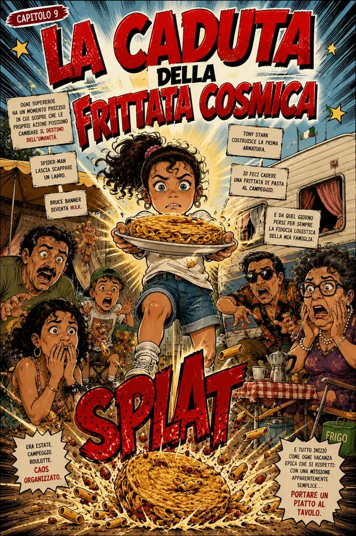
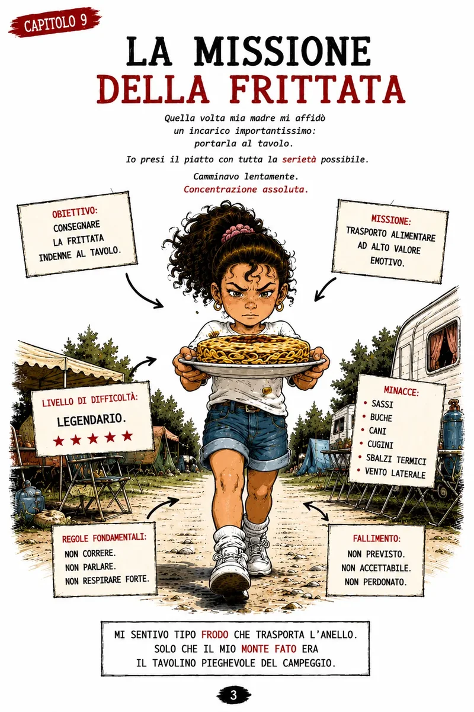
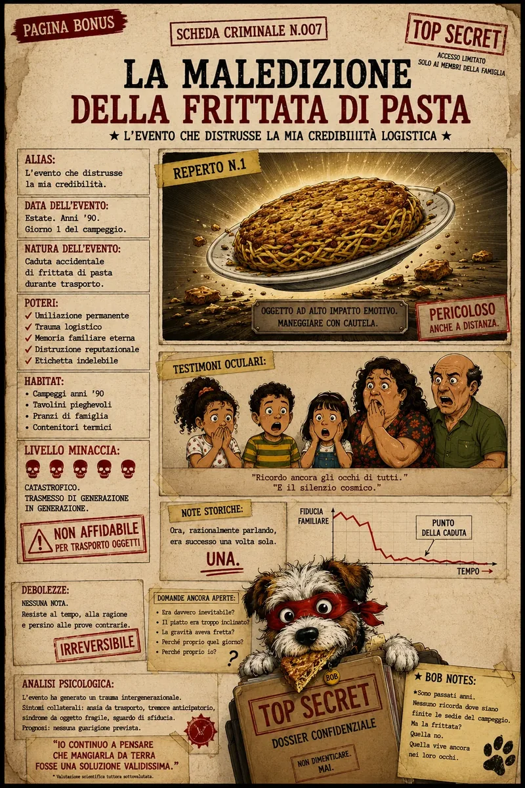

Ipotesi di Bob
L'impatto reputazionale ha superato di molto il danno alimentare.

Il compito sembrava semplice: portare una frittata di pasta fino al tavolo. Bob ricostruisce l'incidente che trasformò un pranzo in una leggenda familiare.
Solo alcuni frammenti del libro: abbastanza per capire il tono, non abbastanza per raccontare tutto.


L'impatto reputazionale ha superato di molto il danno alimentare.
Variabile. Bob considera “prova” qualunque dettaglio che renda la teoria più interessante.
MISSIONE FALLITA. CONSEGUENZE PSICOLOGICHE PROLUNGATE. CASO ANCORA CITATO A TAVOLA.